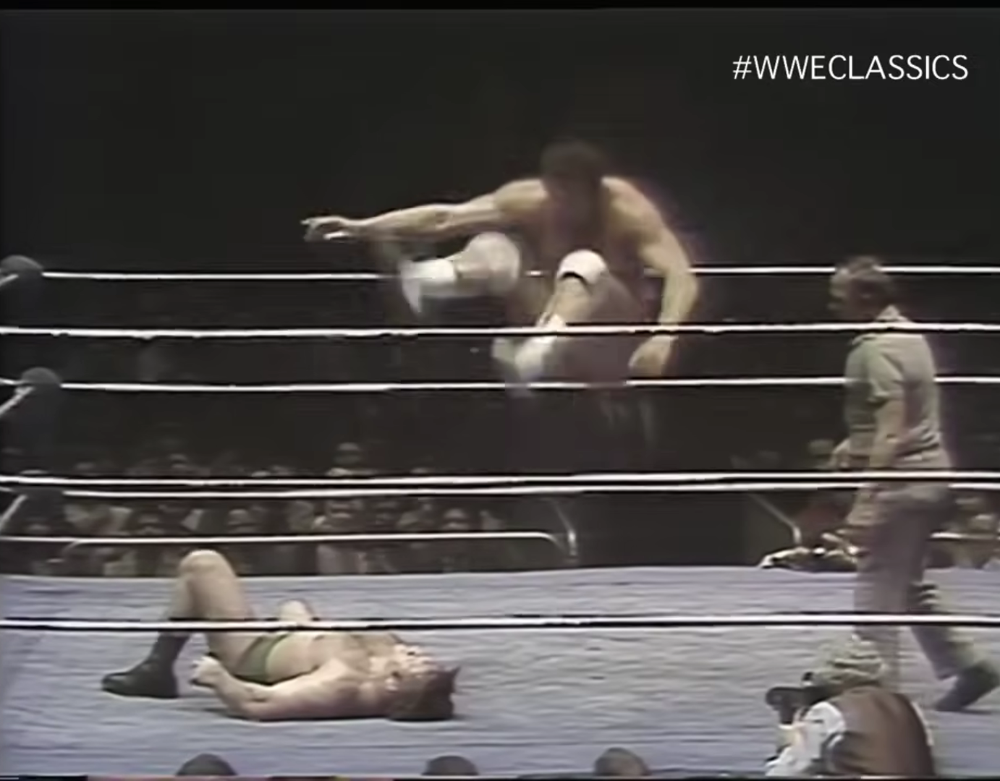

Ernie drops a leg on Sammartino
WWWF on HBO
WWWF Heavyweight Title Match
1/3/1976
Holy fuck, Ernie Ladd is huge. He completely dwarfs Sammartino, who already looks big compared to the ref. It's astounding. He's surprisingly nimble in-ring too for a big man, and very competent at selling for Bruno. His leg drop looks vicious. I also love the crunch sound these old rings make whenever there's a bump. Ernie's missed top rope splash finish of the match is a bit anticlimactic though. Very good for the time.
Rating: 3.75
Recommended to people looking to get into pre-Golden Era wrestling.
Watch online